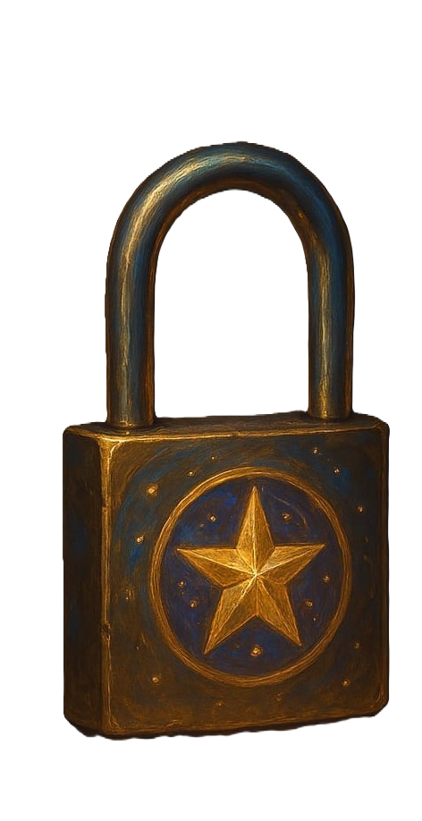
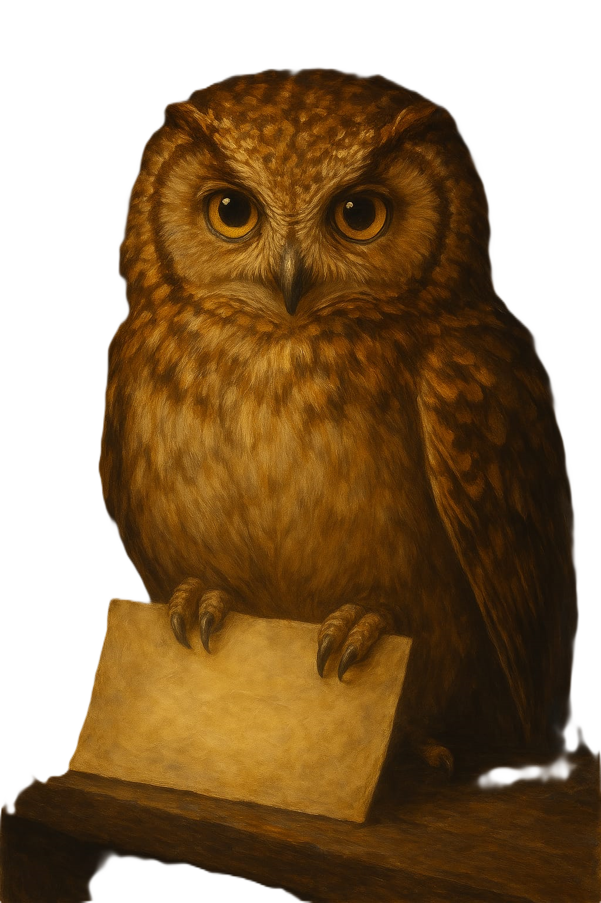
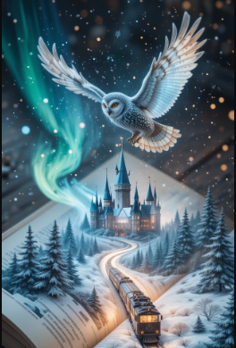
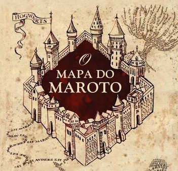

Um evento misterioso abalou os corredores da antiga Escola de Magia de Hogwarts.
O mundo mudou desde a última vez que você o viu... e agora, a magia precisa de você."
Um silêncio estranho paira no ar. A varinha dele está caída no chão.
Você entra e percebe o vazio — ele desapareceu.
O Ministério teme que uma maldição antiga esteja envolvida. E por isso, só alguém
de grande coração e mente brilhante poderá descobrir a verdade.
Para começar sua investigação, use o feitiço que abre o que está trancado...

O Profeta Diário
Mas... algo parece errado com o vídeo. Uma aura tremeluzente esconde parte da tela.
"A verdade está escondida. Use um feitiço para descobrir o que está oculto."
“Quando tudo parece escuro, uma palavra pode reacender o caminho.
Pronuncie alto o feitiço que ilumina até os cantos mais sombrios. ”
🦉 A Coruja Observadora

Você entrou. A sala estava vazia, havia apenas uma coruja lá, agarrada a um bilhete, mas ao te ver ela finalmente à solta como se estivesse entregando a você.
o bilhete parece ter sido deixada as pressas.
📖 O Livro dos Animais Fantásticos

“Um movimento discreto, uma magia silenciosa... e lá está.
O livro que ele lia antes de tudo acontecer. O conhecimento esconde mais do que palavras.”
"Ele estava pesquisando sobre uma criatura invisível a olhos trouxas.
uma criatura que havia sido quebrada a muito tempo, porem ele procurava um jeito de restaurar"
✨ o Mapa
Apos restaurado a mensagem se mostra a você e onde a varinha estava guardada agora jaz um objeto magico, propicio a encontrar o quem esta desaparecido,
contanto que você saiba as palavras magicas.
"O livro que ele lia antes de tudo acontecer. O conhecimento esconde mais do que palavras"
(Vá até onde estava guardada a varinha.)
O mapa do Maroto

Próxima a ele, um papel dobrado com:
"Diga as duas palavras de ativação"
🔮 A Revelação
As palavras aparecem no ar.
"O bruxo tentou revelar algo importante... uma mensagem? Um pedido? Um segredo?"
Dentro da varinha ainda há um eco...
Um nome sussurrado… o seu.
Vá até o lugar onde os sonhos começam e terminam.
🛏️ O Quarto dos Sonhos
"Feche os olhos antes de entrar. Quando abrirem novamente, a verdade será revelada."
🎉 Parabéns, Naissa!
Você descobriu a verdade! O jovem bruxo não desapareceu... ele estava apenas
em um sono mágico profundo, causado por um feitiço de sonhos que deu errado.
Sua investigação brilhante e determinação salvaram o dia. O bruxo acordará
em breve, graças à sua coragem e inteligência!